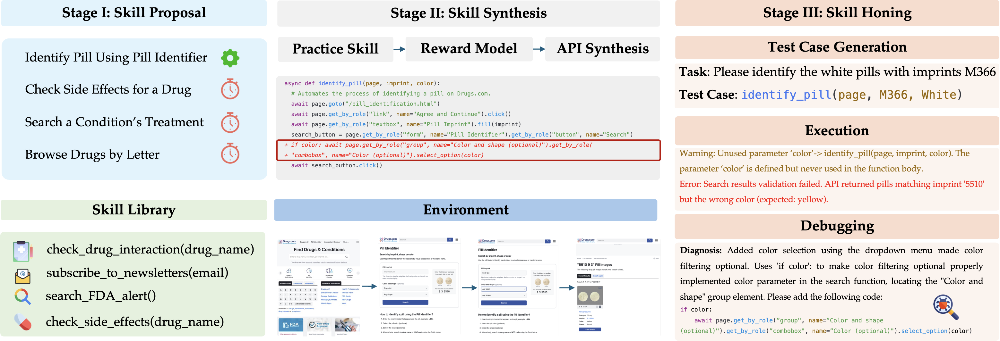

The high-quality grounding data synthesized from web (9M elements from Web-Hybrid) effectively helps UGround generalize to Desktop and Mobile UIs, making UGround outperform previous SOTA SeeClick on every platform and element type on ScreenSpot.
| Method | Gitlab | Map | Shopping | CMS | AVG. | |
|---|---|---|---|---|---|---|
| WebArena | 15.0 | 15.6 | 13.9 | 10.4 | 6.6 | 12.3 |
| AutoEval | 25.0 | 27.5 | 39.6 | 20.9 | 20.8 | 26.9 |
| *SteP | 32.0 | 30.0 | 37.0 | 24.0 | 59.0 | 33.0 |
| SKILLWEAVER | ||||||
| GPT-4o | 17.8 | 27.5 | 19.8 | 18.7 | 37.7 | 22.6 |
| + Skills | 22.2 | 33.9 | 27.2 | 25.8 | 50.0 | 29.8 |
| Δ | ↑ 25% | ↑ 23% | ↑ 38% | ↑ 38% | ↑ 33% | ↑ 32% |
| GPT-4o-mini | 6.1 | 10.3 | 11.8 | 3.3 | 18.9 | 9.2 |
| + Skills | 8.9 | 16.7 | 17.1 | 7.7 | 26.4 | 14.1 |
| Δ | ↑ 46% | ↑ 62% | ↑ 46% | ↑ 133% | ↑ 40% | ↑ 45% |
| Method | Drug | Flight | Cooking | Car | AVG. |
|---|---|---|---|---|---|
| Baseline | 65.0 | 11.7 | 62.5 | 11.1 | 40.2 |
| + Skills | 87.0 | 29.4 | 75.0 | 11.1 | 56.2 |
| Δ | ↑ 34% | ↑ 151% | ↑ 20% | ↑ 0% | ↑ 40% |
We compare success and failure cases of the generated APIs.
Here, the agent is able to generate a useful API to manage the process of checking out all items in a cart.
async def express_checkout(page):
"""
Perform an express checkout for the items currently in the cart.
Args:
page: The Playwright page object to perform actions on.
Usage Log:
- Successfully completed express checkout, resulting in an order confirmation page with order number 000000191.
- Initial attempts failed due to a timeout error when clicking 'Proceed to Checkout'. Resolved by ensuring items were in the cart.
Note:
- Ensure that the cart is pre-filled with the desired items before calling this function.
- The function assumes that the 'Proceed to Checkout' button is visible and clickable from the cart page.
- The function navigates through the checkout process by clicking 'Next' on the Shipping page and 'Place Order' on the Review & Payments page.
- If the 'Place Order' button is not immediately visible, a delay is included to allow dynamic elements to load.
"""
import asyncio
await page.goto("/")
await page.get_by_role("link", name="My Cart").click()
await asyncio.sleep(5)
await page.get_by_role("button", name="Proceed to Checkout").click()
await asyncio.sleep(5)
await page.get_by_role("button", name="Next").click()
await asyncio.sleep(5)
await page.get_by_role("button", name="Place Order").click()
await asyncio.sleep(5)
Images before (left) and after (right) API execution.
Here, we demonstrate that the agent is capable of fixing DOM resolution errors, by making specific tweaks to problematic sections of code. After the following trajectory, the agent makes a patch to the knowledge base.
Here is the trajectory in which the agent attempted to execute the API, encountered a runtime error, and then fixed the API.
State 0
URL: /byteblaze/accessible−html−content−patterns/−/merge requests/14
Reasoning
delete_merged_branches function which is
predefined to handle this operation effectively in the
GitLab UI.
Action
async def act(page):
# Call the function to delete merged branches
await delete_merged_branches(page, "byteblaze/accessible-html-content-patterns")Outcome
'Error': Locator.fill: Error: strict mode violation: get_by_role("textbox") resolved to 2 elements:
1) <input id="search" type="text" name="search" autocomplete="off" placeholder="Search GitLab" data-qa-selector="search box" class="form-control gl-form-input gl-search-box-by-type-input" />
aka get_by_placeholder("Search GitLab")
2) <input type="text" id="BVID158" autocomplete="off" aria-labelledby="input-label" data-qa-selector="delete merged branches input" class="gl-form-input gl-mt-2 form-control gl-form-input-sm" />
aka locator("[id=\"BVID158\"]")
Call log: ...
(Explanation: Here, there is a runtime error in the delete_merged_branches
function. This means the skill is incorrectly or
non-robustly implemented. In this case, the selector
used in the function was ambiguous.)
State 1
URL: /byteblaze/accessible−html−content−patterns/−/branches
Reasoning
The page currently displays a dialog that asks for confirmation to delete all merged branches. It requires typing 'delete' into an input box. After typing the confirmation text, the "Delete merged branches" button can be clicked to proceed.
Action
async def act(page):
# Fill the confirmation textbox with 'delete'
await page.get_by_role("dialog", name="Delete all merged branches?").get_by_role("textbox").fill("delete")
# Click the "Delete merged branches" button to confirm deletion
await page.get_by_role("dialog", name="Delete all merged branches?").get_by_role("button", name="Delete merged branches").click()Outcome
No runtime errors.Agent's Proposed Fix: To fix the runtime error in the generated API, the agent correctly identifies the source of the error and then makes the code more robust.
async def delete_merged_branches(page, project_path):
"""
Automates the deletion of merged branches in a specified GitLab project.
This function navigates to the branches page of the specified project and
deletes all merged branches
by interacting with the confirmation dialog that appears.
Args:
page: The Playwright page object.
project_path: The path of the project in GitLab (e.g., 'byteblaze/
accessible-html-content-patterns').
Usage log:
- Successfully used to delete merged branches in the 'a11y-syntax-
highlighting' project by navigating to the branches page,
clicking the 'Delete merged branches' button, and confirming the action
by typing 'delete'.
- Ensure the project path is correctly specified to match the URL structure
in GitLab.
- The function assumes the user is logged in and has access to the
specified project.
- Resolved an issue with strict mode violation by specifying the correct
textbox within the dialog.
"""
await page.goto(f"/{project_path}/-/branches")
await page.get_by_role("button", name="Delete merged branches").click()
-- await page.get_by_role("textbox")
++ await page.get_by_role("dialog", name="Delete all merged branches?").get_by_role(
++ "textbox"
++ ).fill("delete")
await page.get_by_role("dialog", name="Delete all merged branches?").
get_by_role(
"button", name="Delete merged branches"
).click()
await asyncio.sleep(2)
Sometimes, the agent fails to utilize an API that it has
generated. For example, on the website
cookpad.com, the agent fails to call
search_recipes_by_cuisine_type('hamburger') to
gain recipe details.
Sometimes, website features (like search bars) have certain
mechanics that the agent fails to grasp, but which could
potentially be encoded in the documentation of the API. For
example, here the agent calls
search_recipes_by_ingredients('chocolate chip, -nuts')
instead of
search_recipes_by_ingredients('chocolate chip without nuts') . This causes search results containing nuts to be displayed,
because this website doesn't use the "-" symbol in a search
query to negatively filter by a keyword.
While it is very promising to have Python APIs to navigate a website, and especially appealing to have an agent improve its performance simply by gaining more experience, there are some limitations. First of all, our method (like many others) uses the accessibility tree DOM to obtain a compressed or semantically meaningful text representation of the page. However, some websites fail to parse into a natural accessibility tree representation, which may hinder performance.
@inproceedings{zheng2025skillweaver,
title={Web Agents can Self-Improve by Discovering and Honing Skills},
author={Boyuan Zheng and Michael Y. Fatemi and Xiaolong Jin and Zora Zhiruo Wang and Apurva Gandhi and Yueqi Song and Yu Gu and Jayanth Srinivasa and Gaowen Liu and Graham Neubig and Yu Su},
booktitle={Conference on Language Modeling},
year={2025},
url={add link }
}